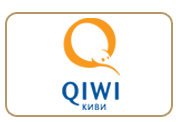

Семейные фотографии обладают невероятными свойствами, они возвращают нас в прекрасное время. Мы в мельчайших подробностях можем вспомнить самые волнительные события из нашей жизни и насладиться ими снова и снова. Семейная фотосессия в фотостудии «Фотомафия» проводится опытным семейным фотографом. Мы создадим такие фотографии, на которых семья будет выглядеть счастливой, веселой и естественной.
| Длительность семейной фотосессии | 1 час | |
| Количество обработанных и распечатанных фото размером 20х30 | 7 шт. | |
| Количество людей участвующих в семейной фотосессии | до 4 человек | |
| Запись обработанных фотографий в электронном виде | 7 шт. | |
| Использование реквизита фотостудии | без ограничений | |
| Дополнительные услуги | ||
| Запись всего отснятого материала в электронном виде | 1000 рублей | |
| Участие дополнительного человека | 300 рублей | |
| Обработка и печать дополнительной фотографии 20х30 | 200 рублей | |
| Печать фотографии 20х30 (без обработки дизайнером) | 30 рублей | |
| Услуги визажиста для одного человека | 800 рублей | |
Если вы ищите детского фотографа или детскую фотостудию, то вы попали по адресу.У фотостудии есть богатый опыт проведения детской фотосъемки. Вы получите качественные, обработанные дизайнером фотографии и положительные эмоции. А наша цена детской фотосессии в студии Вас приятно удивит.
| Длительность семейной фотосессии | 1 час | |
| Количество обработанных и распечатанных фото размером 20х30 | 7 шт. | |
| Количество людей участвующих в семейной фотосессии | до 4 человек | |
| Запись обработанных фотографий в электронном виде | 7 шт. | |
| Использование реквизита фотостудии | без ограничений | |
| Дополнительные услуги | ||
| Запись всего отснятого материала в электронном виде | 1000 рублей | |
| Участие дополнительного человека | 300 рублей | |
| Обработка и печать дополнительной фотографии 20х30 | 200 рублей | |
| Печать фотографии 20х30 (без обработки дизайнером) | 30 рублей | |
| Услуги визажиста для одного человека | 800 рублей | |
| Длительность фотосессии беременных в студии | 1 час | |
| Количество обработанных и распечатанных фото размером 20х30 | 7 шт. | |
| Запись обработанных фотографий в электронном виде | 7 шт. | |
| Количество людей участвующих в фотосессии беременной | до 2 человек | |
| Дополнительные услуги | ||
| Запись всего отснятого материала в электронном виде | 1000 рублей | |
| Участие дополнительного человека | 300 рублей | |
| Обработка и печать дополнительной фотографии 20х30 | 200 рублей | |
| Услуги визажиста для одного человека | 800 рублей | |
| Длительность свадебной фотосессии | весь день | |
| Количество обработанных фото | все | |
| Запись всего отснятого материла в электронном виде | включена | |
| Печать фото | 50 штук | |
| Дополнительные услуги | ||
| Свадебная фотокнига | от 1500 рублей | |
| Печать на холсте (картина) | от 2000 рублей | |
| Календарь с фотографиями формата А3 (30х40) | 300 рублей | |
Видеосъемка свадьбы - весь день (длительность до 10 часов) стоит 20 000 рублей. Съемка на 2 камеры. Вы получаете видео свадьбы на диске и видео клип в подарок!
Возможна почасовая оплата! Звоните по телефону +7 (950) 846-01-27
| Длительность фотосъемки выписки из роддома | до 1 часа | |
| Количество обработанных фото | все | |
| Запись всего отснятого материла в электронном виде | включена | |
| Дополнительные услуги | ||
| Видеосъемка выписки из роддома | 2000 рублей | |
| Фотокнига размером 20х20 | 1300 рублей | |
| Обработка и печать дополнительной фотографии 30х40 | 300 рублей | |
Если хотите заказать фотографа на выписку из роддома позвоните нам +7 (950) 846-01-27
 приедем к любому родильному дому в назначенное время
приедем к любому родильному дому в назначенное время
 сделаем качественные фотографии и (или) видеосъемку выписки
сделаем качественные фотографии и (или) видеосъемку выписки
 обработаем фотографии и отдадим Вам на диске или флэшке
обработаем фотографии и отдадим Вам на диске или флэшке
 сделаем из фотографий фотокнигу
сделаем из фотографий фотокнигу
 готовый результат через 10 дней
готовый результат через 10 дней
| Длительность фотосъемки крещения | 1 час | |
| Запись всего отснятого материла в электронном виде | включено | |
| Обработка и печать фотографий (20х15) | 10 шт. | |
| Дополнительные услуги | ||
| Фотокнига размером 20х20 | 1500 рублей | |
| Обработка и печать дополнительной фотографии 20х30 | 200 рублей | |
| Календарь с фотографиями формата А3 (30х40) | 300 рублей | |
| Видеосъёмка крестин | 2000 рублей | |
Мы принимаем к оплате
